수능(국어영역) (2014-09-03 기출문제)
1. 다음은 ‘학생 2’의 발표 계획이다. (나)에 반영되지 않은 것은?(1번 공통지문 문제)
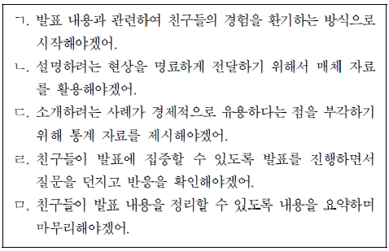
- ㄱ
- ㄴ
- ㄷ
- ㄹ
- ㅁ
(정답률: 알수없음)

2. (나)의 발표를 듣고 추론한 내용으로 가장 적절한 것은? [3점](1번 공통지문 문제)
- 솔방울 하나에는 소나무 씨앗 한 개가 들어있겠군.
- 솔방울이 습기를 잃으면 실편은 안쪽으로 오므라들겠군.
- 옛날 사람들은 솔방울이 활짝 벌어지면 비가 올 가능성이 낮다고 생각했겠군.
- 솔방울의 실편 안쪽 조직은 바깥쪽 조직에 비해 습기에 더 빨리 반응하겠군.
- 솔방울의 특성을 응용하여 만든 운동복은 외부의 습기를 차단하는 기능에 초점을 맞추어 제작되었겠군.
(정답률: 알수없음)
3. ‘진희’가 ⓐ를 대상으로 ⓑ를 홍보하기 위해 교내 방송을 하고자 한다. <보기>와 같이 내용을 조직하여 말하고자 할 때, 각 단계에 따른 발화로 적절하지 않은 것은?(4번 공통지문 문제)
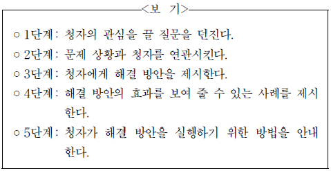
- 1단계 : 여러분, 드라마 ‘○○’ 보셨죠? 주인공이 또래 친구에게 고민거리를 털어놓고 위로받는 모습이 참 인상적이지 않았나요?
- 2단계 : 여러분은 고민이 있어도 부모님이나 선생님께는 말씀드리기 부담스러워 고민을 이야기하지 못한적이 있었을 겁니다.
- 3단계 : 이제는 이런 걱정을 하지 않으셔도 됩니다. 말하기 힘들었던 여러분의 고민을 △△ 상담 동아리에서 또래 친구들에게 마음껏 털어놓을 수 있습니다.
- 4단계 : 고민을 털어놓지 않은 채 계속 마음속에 담아두고 있으면 자신뿐만 아니라 주변 사람들까지도 힘들게 만들 수 있습니다.
- 5단계 : 망설이지 말고 연락하세요. 학급 게시판에서 상담가능 날짜를 확인한 후 게시판에 있는 연락처로 신청하시고, 만나서 고민을 털어놓아 보세요.
(정답률: 알수없음)
4. (나)의 [A]에 들어갈 글을 작성하고자 할 때, <조건>에 따라쓴 것으로 가장 적절한 것은? [3점](6번 공통지문 문제)
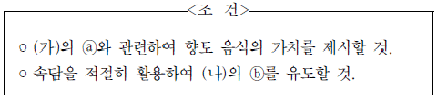
- 향토 음식은 예로부터 전해 내려온 음식으로서 현재의 식문화를 성찰하게 하는 거울이다. 따라서 이를 널리 알리기 위해 향토 음식을 적극적으로 홍보하는 노력을 해야 한다.
- 향토 음식은 청소년의 관심이 없다면 사라질 수밖에 없다. 뚝배기보다 장맛이라는 말이 있듯이 향토 음식은 우리 전통문화의 정체성을 형성하는 기반이 될 수 있을 것이다.
- 향토 음식은 우리 전통을 이어 갈 소중한 유산 중 하나이다. 티끌 모아 태산이 되듯 향토 음식에 대한 청소년의 작은 관심들이 모인다면 향토 음식은 우리의 자랑으로 자랄 것이다.
- 향토 음식에 대한 현재의 관심은 우리 식문화의 미래를 여는 길이다. 우물가에서 숭늉을 찾을 수 없는 것처럼 향토 음식을 그대로 유지하기만 하는 데에 급급해서는 안 될 것이다.
- 향토 음식의 전통에 의문을 갖고 소홀히 여기는 것은 다 된 밥에 재 뿌리는 격이다. 우리 향토 음식의 발전을 위해서는 외국의 훌륭한 식문화와 융합하려는 자세가 필요할 것이다.
(정답률: 알수없음)
5. ㉠～㉤을 고쳐 쓰기 위한 방안으로 적절하지 않은 것은?(6번 공통지문 문제)
- ㉠ : 내용의 연결이 자연스럽지 못하므로 바로 뒤의 문장과 순서를 교체한다.
- ㉡ : 접속어의 사용이 잘못되었으므로 ‘그런데’로 수정한다.
- ㉢ : 글의 흐름과 어긋나는 문장이므로 삭제한다.
- ㉣ : 의미상 어울리지 않으므로 ‘소박한’으로 고친다.
- ㉤ : 문맥상 부적절한 단어이므로 ‘기여’로 바꾼다.
(정답률: 알수없음)
6. 다음은 교지 편집장이 이메일로 보내온 수정 요청 사항이다. 이를 고려하여 학생이 자신의 글을 고쳐 쓰기 위해 세운 계획으로 적절하지 않은 것은?(9번 공통지문 문제)
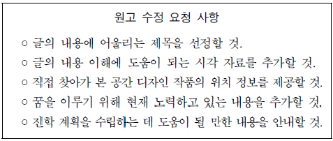
- 글에 언급한 공간 디자이너의 역할과 나의 꿈을 연결하는 제목을 제시하자.
- 피아노 계단을 이용하는 사람들의 모습이 담긴 사진을 첨부하자.
- 우리 주변에서 환경과 어울리도록 새롭게 디자인할 필요가 있는 공간의 위치 정보를 소개하자.
- 공간 디자이너에게 요구되는 능력을 키우기 위해 관련 영역의 책을 읽고 있다는 내용을 추가하자.
- 진학 계획을 세울 때 도움을 얻었던 인터넷 사이트를 안내하자.
(정답률: 알수없음)
7. <보기>의 ㉠에 들어갈 내용으로 알맞은 것은?
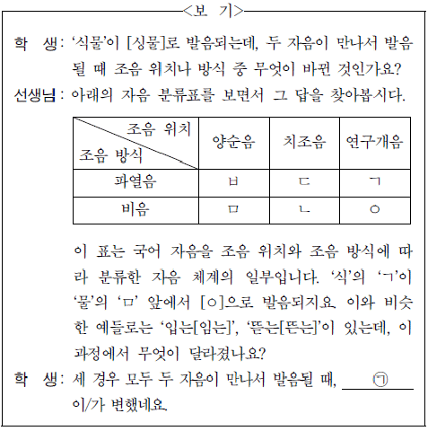
- 앞 자음의 조음 방식
- 뒤 자음의 조음 방식
- 두 자음의 조음 방식
- 앞 자음의 조음 위치
- 뒤 자음의 조음 위치
(정답률: 알수없음)
8. <보기>의 ㉠의 방식에 따라 형성된 단어로 적절한 것은? [3점]
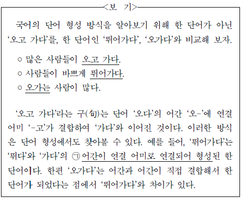
- 꿈꾸다
- 돌아서다
- 뒤섞다
- 빛나다
- 오르내리다
(정답률: 알수없음)
9. <보기>의 ㉠에 해당하는 예가 아닌 것은?
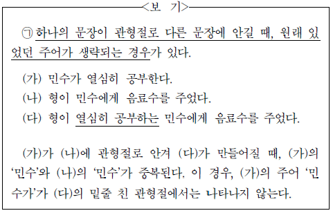
- 형이 숙제를 하는 동생을 불렀다.
- 동생은 대학생이 된 형과 여행을 했다.
- 영수가 버스에 탄 경희에게 말을 걸었다.
- 나는 정수가 은희와 결혼한 사실을 몰랐다.
- 그는 이 그림을 그린 화가의 전시회에 갔다.
(정답률: 알수없음)
10. 다음은 ‘사전 활용하기’ 학습 활동을 위한 자료이다. 이에 대해 탐구한 내용으로 적절하지 않은 것은?
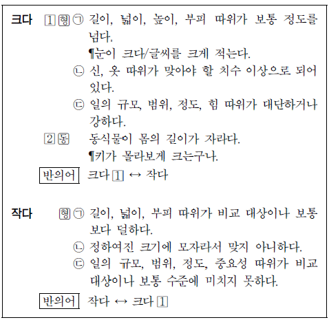
- ‘크다 ’과 ‘크다
 ’는 품사의 차이에 따라 구분된 것이겠군.
’는 품사의 차이에 따라 구분된 것이겠군. - ‘크다 ㉠’의 용례에서 ‘크다’를 ‘작다’로 바꾸면 ‘작다 ㉠’의 용례가 되겠군.
- ‘크다 ’는 뜻풀이와 용례로 보아 ‘작다 ㉢’과 반의 관계를 이루겠군.
- ‘작다 ㉡’의 용례로 ‘키가 자라서 바지가 작다.’를 들 수 있겠군.
- ‘작다 ㉢’의 용례로 ‘작은 실수를 하다.’를 들 수 있겠군.
(정답률: 알수없음)
11. ㉠～㉤의 잘못된 문장을 수정할 때 고려한 문법적 기준으로 적절하지 않은 것은?
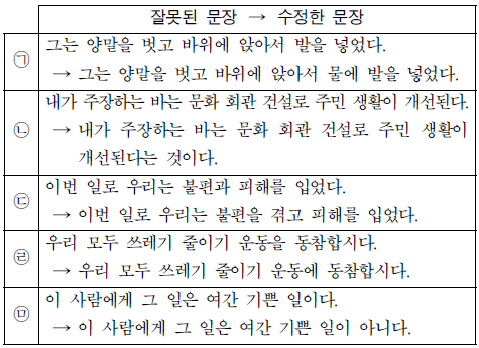
- ㉠ : 목적어인 ‘발을’을 수식하는 관형어가 있어야 한다.
- ㉡ : ‘내가 주장하는 바는’과 호응하는 서술어가 있어야 한다.
- ㉢ : 목적어의 하나인 ‘불편’과 호응하는 서술어가 있어야 한다.
- ㉣ : 서술어인 ‘동참합시다’가 요구하는 부사어에 정확한 조사를 사용해야 한다.
- ㉤ : 부사 ‘여간’은 부정의 의미를 나타내는 말과 호응해야 한다.
(정답률: 알수없음)
12. 윗글을 통해 알 수 있는 내용으로 적절하지 않은 것은?(16번 공통지문 문제)
- 과거에 경험한 사건이 그와 관련된 냄새를 통해 환기되는 경우가 있다.
- 특정한 냄새와 그 명칭을 정확히 연결하는 능력은 학습을 통해 향상될 수 있다.
- 취기재의 이름을 알아맞히는 능력이 향상되면 그 취기재의 탐지 역치를 낮출 수 있다.
- 인간이 구별할 수 있는 냄새의 가짓수는 인간이 인식하는 취기재의 가짓수보다 많다.
- 같은 취기재들 사이에서 농도 차이가 평균 11 % 미만이라면 냄새의 세기를 구별하기 어렵다.
(정답률: 알수없음)
13. ㉠의 경우에 해당하는 것은?(16번 공통지문 문제)
- 탐지 역치가 10인 취기재의 농도가 5인 경우
- 탐지 역치가 10인 취기재의 농도가 15인 경우
- 탐지 역치가 10인 취기재의 농도가 35인 경우
- 탐지 역치가 20인 취기재의 농도가 15인 경우
- 탐지 역치가 20인 취기재의 농도가 85인 경우
(정답률: 알수없음)
14. ㉠의 실행 과정에 대한 이해로 적절하지 않은 것은?(19번 공통지문 문제)
- 교체 시간이 줄어들면 총처리 시간이 줄어든다.
- 대기 시간이 늘어나면 총처리 시간이 늘어난다.
- 총실행 시간이 줄어들면 총처리 시간이 줄어든다.
- 구간 시간이 늘어나면 구간 실행 횟수는 늘어난다.
- 작업큐의 프로그램 개수가 늘어나면 총처리 시간은 늘어난다.
(정답률: 알수없음)
15. 윗글을 바탕으로 할 때, <보기>의 [가]에 들어갈 내용으로 적절한 것은? [3점](19번 공통지문 문제)
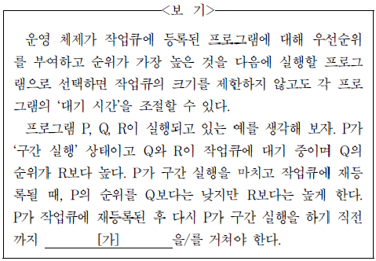
- P에서 R로의 교체
- Q의 구간 실행
- Q의 구간 실행과 R의 구간 실행
- Q의 구간 실행과 Q에서 P로의 교체
- R의 구간 실행과 R에서 P로의 교체
(정답률: 알수없음)
16. 윗글의 내용과 일치하지 않는 것은?(22번 공통지문 문제)
- 문인들은 사군자화를 통해 군자의 덕목을 드러내려 했다.
- 묵란화는 그림의 소재에 관념을 투영하여 형상화한 것이다.
- 유배 생활은 김정희의 서체와 화풍의 변화에 영향을 주었다.
- 묵란화는 중국에서 기원하여 우리나라에 전래된 그림 양식이다.
- 김정희는 말년에 서예의 필법을 쓰지 않고 그리는 묵란화를 창안하였다.
(정답률: 알수없음)
17. ㉠, ㉡에 대한 이해로 적절하지 않은 것은?(22번 공통지문 문제)
- ㉠에서 완만하고 가지런한 잎새는 김정희가 삶이 순탄하던 시절에 추구하던 단아한 품격을 표현한 것이다.
- ㉠에서 소담하고 정갈한 꽃을 피워 내는 모습은 고상한 품위를 지키려는 김정희의 이상을 표상한 것이다.
- ㉡에서 바람을 맞아 뒤틀리듯 구부러진 잎은 세상의 풍파에 시달린 김정희의 처지를 형상화한 것이다.
- ㉡에서 홀로 위로 솟구쳤다 꺾인 잎은 지식을 추구했던 과거의 삶과 단절하겠다는 김정희 자신의 의지가 표현된 것이다.
- ㉠과 ㉡에 그려진 난초는 김정희가 자신의 인문적 교양과 감성을 표현하기 위해 선택한 소재이다.
(정답률: 알수없음)
18. <보기>를 바탕으로 할 때, 윗글에 나타난 김정희의 예술 세계에 대해 이해한 내용으로 적절하지 않은 것은? [3점](22번 공통지문 문제)
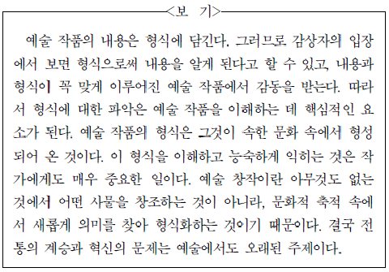
- 전형적인 방식으로 <석란>을 그린 것은 당시 문인화의 전통을 수용한 것이겠군.
- 추사체라는 필법을 새롭게 창안했다는 것은 전통의 답습에 머무르지 않았음을 의미하는군.
- <부작란도>에서 참모습을 얻었다고 한 것은 의미가 그에 걸맞은 형식을 만난 것이라 할 수 있겠군.
- 시와 서예와 그림 모두에 능숙했다는 것은 여러 가지 표현 양식을 이해하고 익힌 것이라 할 수 있겠군.
- <부작란도>에서 자신만의 감정을 드러내는 세계를 창출했다는 것은 축적된 문화로부터 멀어지려 한 것이라 할 수 있겠군.
(정답률: 알수없음)
19. 윗글을 바탕으로 할 때, 그로티우스의 국제법 사상에 대한 추론으로 적절하지 않은 것은?(26번 공통지문 문제)
- 국가 사이의 관계를 규율하는 법은 자연법에 근거를 두어야 한다.
- 국가 간에 전쟁을 할 때에도 마땅히 지켜야 할 법 규범이 있다.
- 국제 분쟁을 조정하고 인류의 평화를 이루기 위하여 국제사회에 적용되는 법이 있어야 한다.
- 각국의 실정법을 두루 통합하여 국제법으로 만들면 그것은 어디서나 통용되는 현실적 규범이 될 수 있다.
- 종교의 차이로 전쟁이 이어지는 상황에서 전통적인 신학 이론을 바탕으로 국제법을 구성하면 보편적으로 받아들여질 수 없다.
(정답률: 알수없음)
20. 윗글을 바탕으로 할 때, 자연법 사상에 대한 설명으로 가장 적절한 것은?(26번 공통지문 문제)
- 국가의 권위만이 자연법에 제한을 둘 수 있다고 생각했다.
- 윤리나 도덕과 관련이 없는 근원적인 법 규범이 존재한다고 생각했다.
- 자연법은 인간의 본성과 대립하지만 인류를 번영으로 이끈다고 생각했다.
- 인간의 이성이 시공을 초월하는 본질적인 법을 찾아낼 수 있다고 생각했다.
- 자연법의 역할은 실정법에 없는 내용을 보충하는 데 머물러야 한다고 생각했다.
(정답률: 알수없음)
21. <보기>는 윗글을 읽고 쓴 글이다. ⓐ∼ⓔ 중 윗글에 대한 이해로 적절하지 않은 것은? [3점](26번 공통지문 문제)
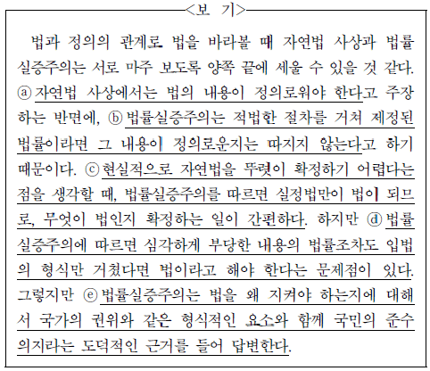
- ⓐ
- ⓑ
- ⓒ
- ⓓ
- ⓔ
(정답률: 알수없음)
22. 문맥상 ㉠과 바꿔 쓰기에 가장 적절한 것은?(26번 공통지문 문제)
- 가늠할
- 가져올
- 기다릴
- 떠올릴
- 헤아릴
(정답률: 알수없음)
23. [A]와 [B]에 대한 이해로 가장 적절한 것은?(31번 공통지문 문제)
- [A]에서는 겨울-나무의 상승적 이미지가, [B]에서는 봄-나무의 하강적 이미지가 나타난다.
- [A]의 ‘뿌리 박고’는 겨울-나무의, [B]의 ‘부르터지면서’는 봄-나무의 좌절감을 드러낸다.
- [A]의 ‘대가리 쳐들고’는 겨울-나무가, [B]의 ‘들이받으면서’는 봄-나무가 자연의 질서에 순응하는 속성을 드러낸다.
- [A]의 ‘두 손’은 겨울-나무의 외양을, [B]의 ‘뜨거운 혀’는 봄-나무의 열정을 비유한 표현이다.
- [A]의 ‘벌’은 겨울-나무의, [B]의 ‘싹’은 봄-나무의 고통을 상징한다.
(정답률: 알수없음)
24. <보기>를 참고하여 윗글을 감상한 내용으로 적절하지 않은 것은? [3점](31번 공통지문 문제)
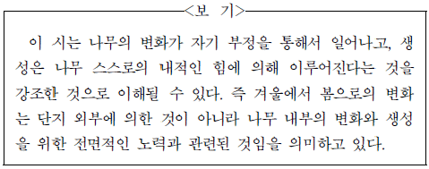
- ‘이게 아닌데 이게 아닌데’는 나무가 변화를 지향하며 자기 부정을 하는 장면으로 볼 수 있다.
- ‘밀고 간다, 막 밀고 올라간다’는 나무의 의지로 나무가 내적인 힘을 쏟는 것으로 볼 수 있다.
- ‘온몸이 으스러지도록’은 나무가 변화와 생성을 위해 기울이는 전면적인 노력을 강조하는 것이다.
- ‘마침내, 끝끝내’는 겨울-나무가 마지막까지 겨울-나무이고자 하는 의지를 표현한다.
- ‘꽃 피는 나무’는 나무가 스스로의 변화를 거쳐 새로운 단계로 성장했음을 표상하는 것이다.
(정답률: 알수없음)
25. ⓐ∼ⓔ에 대한 이해로 적절하지 않은 것은?(34번 공통지문 문제)
- ⓐ : ‘나’에게 긴장을 풀고 공상에 빠지게 하는 존재이다.
- ⓑ : 엉뚱한 공상을 하던 ‘나’에 대해 자조하는 모습이 엿보인다.
- ⓒ : ‘나’의 무진행의 계기 중 하나로 작용한다.
- ⓓ : ‘나’에게 기대하는 ‘아내’의 욕망이 드러나고 있다.
- ⓔ : ‘아내’의 말을 긍정하며 그녀의 말을 적극적으로 수용하는 ‘나’의 태도를 드러낸다.
(정답률: 알수없음)
26. (나)는 (가)를 각색한 시나리오다. (가)와 (나)에 대한 설명으로 적절하지 않은 것은?(34번 공통지문 문제)
- (가)에서는 서사 진행을 시간 순서대로 서술하고 있는 데 비해, (나)에서는 회상의 방식으로 보여 주고 있다.
- (가)에서는 ‘아내’에 대한 주인공의 반응을 비유적 표현으로 서술한 데 비해, (나)에서는 대사로 처리하여 전달하고 있다.
- (가)에서는 ‘아내’의 말을 인용하여 서술하고 있는 데 비해, (나)에서는 ‘아내’의 말을 효과음으로 처리하여 보여 주고 있다.
- (가)에서는 공간의 변화를 서술하여 제시하는 데 비해, (나)에서는 ‘윤기준의 방 안’, ‘시골 자동차길’, ‘버스 안’으로 구분하여 제시하고 있다.
- (가)는 버스의 덜컹거림이 주는 느낌을 서술자가 직접 서술해 주는 데 비해, (나)는 그 느낌을 버스가 자갈길을 달리는 모습을 보여 줌으로써 전달하고 있다.
(정답률: 알수없음)
27. <보기>를 참고하여 (나)를 이해한 내용으로 가장 적절한 것은? [3점](34번 공통지문 문제)
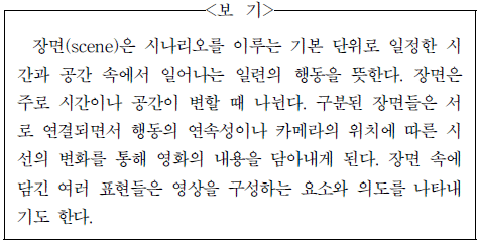
- S#4에서 인서트된 사진은 인물의 분열된 의식을 보여 주기 위해 선택된 요소이다.
- S#4에서 등장하는 공간과 소품들은 주인공의 경제적 수준을 고려하여 선택된 요소들이다.
- S#5의 창밖 풍경은 S#4의 공간과 대조되어 인물 간의 갈등을 강화시키고 있다.
- S#4에서 S#5로의 전환은 방 안의 우울한 분위기가 도시 전체로 확대되고 있음을 보여 준다.
- S#11에서 S#12로의 전환은 카메라의 시선이 버스의 내부에서 외부로 바뀌고 있음을 보여 준다.
(정답률: 알수없음)
28. 윗글의 내용에 대한 이해로 적절하지 않은 것은?(38번 공통지문 문제)
- ‘천자’가 ‘장수’에게 “그대는 뉘신데 죽을 사람을 살리는가?”라고 말하는 것으로 보아, ‘천자’는 ‘장수’의 능력에 놀라움을 표하고 있다.
- ‘유충렬’이 ‘천자’ 앞에서 ‘유심’이 죽었다며 원통해하는 것으로 보아, ‘유충렬’은 부친이 죽은 것으로 잘못 알고 있다.
- ‘군사들’ 중에 ‘유충렬’의 말을 듣고 ‘눈물을 흘리지 않는 이’가 없는 것으로 보아, ‘군사들’은 ‘유충렬’의 심정에 공감하고 있다.
- ‘유충렬’이 ‘천자’를 도와 전쟁에 나가겠다고 약속하는 것으로 보아, ‘유충렬’은 ‘태자’의 말과 기상에 감화되어 스스로를 반성하고 있다.
- ‘천자’가 ‘유충렬’에게 ‘과인은 보지 말고’ 나라를 구하라고 권유하는 것으로 보아, ‘천자’는 ‘유심’의 귀양에 대한 자신의 과오를 인정하지 않고 있다.
(정답률: 알수없음)
29. [A], [B]에 대한 분석으로 적절하지 않은 것은?(38번 공통지문 문제)
- [A]에서는 자신의 정체를 밝히면서 상대방에 대한 원망을 드러낸다.
- [A]에서는 비유적 표현을 통해 상대방에게 자신의 심경을 토로한다.
- [B]에서는 역사적인 사실을 근거로 하여 상대방의 견해를 옹호한다.
- [B]에서는 보답의 의지를 표명하여 상대방의 태도 변화를 촉구한다.
- [B]에서는 상대방에게 자신의 역할과 본분에 충실할 것을 강조한다.
(정답률: 알수없음)
30. <보기>를 참고하여 윗글을 감상한 내용으로 적절하지 않은 것은? [3점](38번 공통지문 문제)
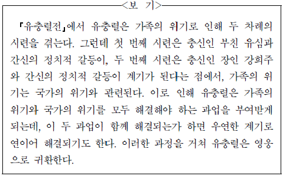
- 유충렬이 일곱 살에 부모와 이별하여 고난을 겪은 것에서, 유충렬의 첫 번째 시련은 ‘유심’의 유배로 인한 가족의 이산에서 비롯된 것임을 알 수 있군.
- ‘천자’가 ‘역적’의 말을 듣고 ‘충신’을 귀양 보낸 것에서, 유충렬의 두 번째 시련은 ‘역적’과의 정치적 갈등으로 인한 ‘강희주’의 유배에서 비롯된 것임을 알 수 있군.
- 유충렬이 ‘강희주’를 구하고 더불어 ‘남적’을 물리친 것에서, 유충렬이 가족의 위기와 국가의 위기를 함께 해결하고 있음을 알 수 있군.
- 유충렬이 ‘남적’을 소멸하고 오는 길에 ‘모친’을 만난 것에서, 우연한 계기에 가족 위기의 해소가 국가 위기의 해소로 이어지고 있음을 알 수 있군.
- ‘남적’을 소탕하고 금의환향하는 유충렬을 백성들이 환대하는 것에서, 유충렬이 영웅으로 귀환하고 있음을 알 수 있군.
(정답률: 알수없음)
31. ㉠의 문맥적 의미와 가장 가까운 것은?(38번 공통지문 문제)
- 나는 분을 이기지 못하고 울음을 터뜨렸다.
- 친구는 제 몸을 이기지 못하고 비틀거렸다.
- 형은 온갖 역경을 이기고 마침내 성공했다.
- 우리 팀이 상대를 큰 차이로 이기고 우승했다.
- 삼촌은 병을 이기고 마침내 건강을 회복하였다.
(정답률: 알수없음)
32. ㉠∼㉤ 중 <보기>의 ⓐ의 의미와 가장 가까운 것은?(43번 공통지문 문제)
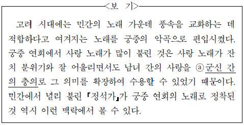
- ㉠
- ㉡
- ㉢
- ㉣
- ㉤
(정답률: 알수없음)
33. <보기>를 참고할 때, (나)에 대한 이해로 가장 적절한 것은? [3점](43번 공통지문 문제)
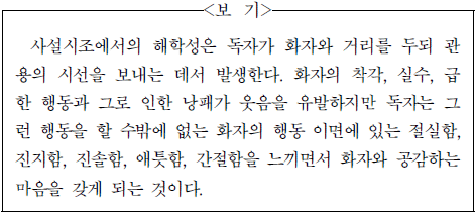
- 화자가 ‘저녁밥’을 짓다가 ‘임’이 온다는 소식을 듣고 혼잣말하는 모습에서 독자는 웃음 지으면서도 그 속에 담긴 진솔함을 공감한다.
- 화자가 ‘임’이라 여긴 ‘거머희뜩’한 것을 향해 ‘워렁퉁탕’ 건너가는 모습에서 독자는 웃음 지으면서도 그 속에 담긴 절실함을 공감한다.
- 화자가 집 안 마당에서 서성대며 ‘건넌 산’을 느긋하게 바라보는 모습에서 독자는 웃음 지으면서도 그 속에 담긴 애틋함을 공감한다.
- 화자가 처음 보는 ‘삼대’를 ‘임’으로 착각하여 ‘임’을 원망하는 모습에서 독자는 웃음 지으면서도 그 속에 담긴 간절함을 수용한다.
- 화자가 ‘임’이 오지 못하게 된 이유를 ‘밤’ 탓으로 돌리는 모습에서 독자는 웃음 지으면서도 그 속에 담긴 진지함을 수용한다.
(정답률: 알수없음)
정답이 "ㄷ" 인 이유는 보기에서 알 수 없다. 추가적인 정보가 필요하다.